Extras
Ivan Cucchi1 & Marcin Kierczak2
1 Sweden AI Factory / Stockholm University
2 NBIS / SciLifeLab
25 November 2026
Extra slides — not part of the main talk, pulled up when questions go there.
0.94 vs 0.77 pneumothorax AUC with vs without a chest drain
A drain means the pneumothorax is already treated. The model finds the treatment — and misses the untreated cases that matter.
CXR14; overall AUC 0.87. Oakden-Rayner et al. (2020)
0.94 vs 0.77 pneumothorax AUC with vs without a chest drain
A drain means the pneumothorax is already treated. The model finds the treatment — and misses the untreated cases that matter.
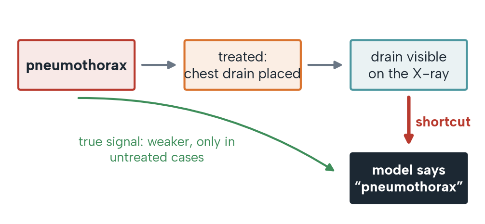
CXR14; overall AUC 0.87. Oakden-Rayner et al. (2020)
AUC 0.63 external validation, 38,455 hospitalisations
67% of sepsis cases missed · alerts on 18% of all patients
Wong et al. (2021)
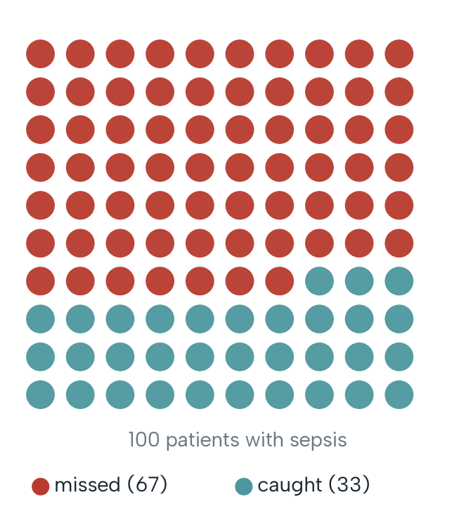
AUC 0.63 external validation, 38,455 hospitalisations
67% of sepsis cases missed · alerts on 18% of all patients
Wong et al. (2021)
“…current explainability methods are unlikely to achieve these goals for patient-level decision support”
Goals = clinician trust, transparency, less bias. Quote from the abstract of Ghassemi et al. (2021)
| Method | Captures | Idea |
|---|---|---|
| Predict a variance | aleatoric | network outputs mean and σ (Kendall and Gal 2017) |
| MC dropout | epistemic | keep dropout on at test time (Gal and Ghahramani 2016) |
| Deep ensembles | epistemic (+ aleatoric) | disagreement of M models (Lakshminarayanan et al. 2017) |
| Bayesian / GP | both | posterior over functions (Hüllermeier and Waegeman 2021) |
| Conformal prediction | total | sets with guaranteed coverage (Angelopoulos and Bates 2021) |
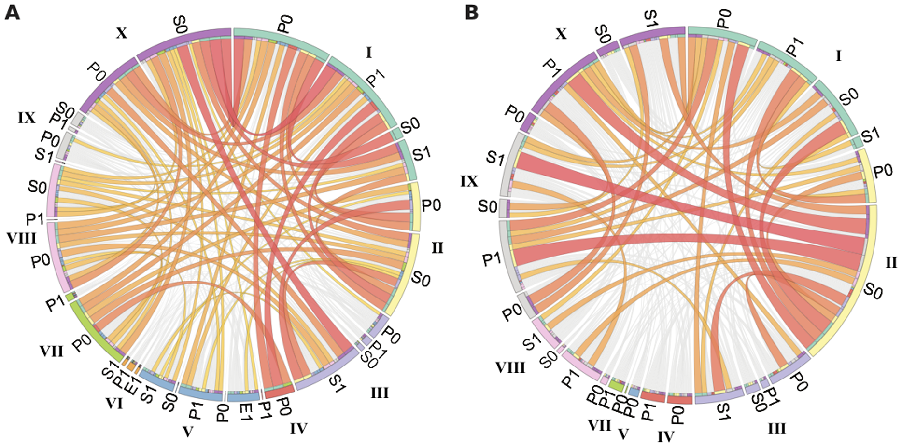
Rule-based (rough-set) model of exon inclusion from histone marks
A rule condition, read out:
“I P0” is interpreted as “H2BK5me1 preceding the exon is absent”
Every rule is readable — and testable.
Circos plot of co-occurring histone modifications in the rules: Enroth et al. (2012) (Fig. 2, CC-BY); as used in Kierczak (2019)
Attention highlights the parts of the input the model focuses on.
Model highlights
some residues
→
Remove them
from the input
→
Prediction changes
→ they mattered
Prediction unchanged
→ just a pretty picture
In protein language models, attention matches residue contacts and binding sites — learned without any structure (Rao et al. 2021; Vig et al. 2021). The model represents structure; whether it uses it, only an ablation tells.
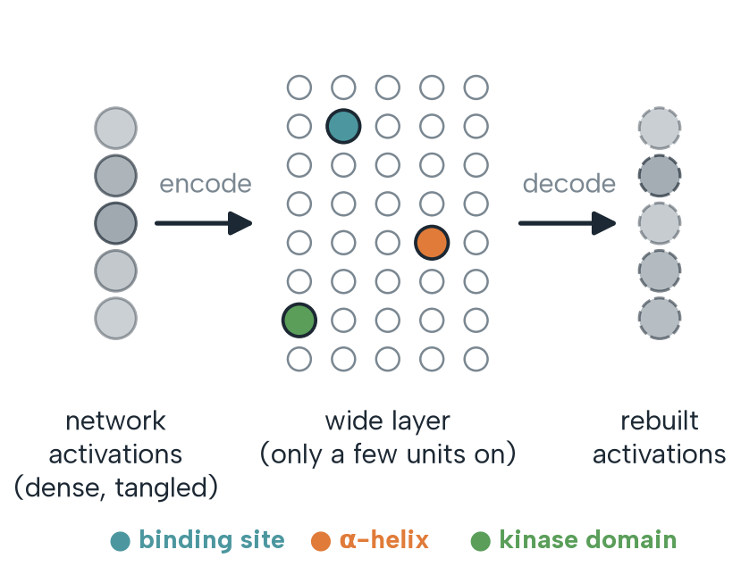
Features are found, not given — each one still has to be checked.
Schematic; method Bricken et al. (2023); Cunningham et al. (2023); applied to protein language models in Simon and Zou (2025); Adams et al. (2025)
Concepts (TCAV): “How much does striped drive zebra?”
1. Show examples
of the concept (stripes)
vs. random images
→
2. Find the direction
inside the network that separates them = “stripedness”
→
3. Test it
push zebra images that way — does the zebra score go up?
TCAV score = share of zebra images where it does. In pathology: does “mitotic figure” drive “tumour”?
Counterfactuals: “the smallest change to \(x\) that flips the decision”
Kim et al. (2018); Wachter et al. (2018); DeGrave et al. (2021)
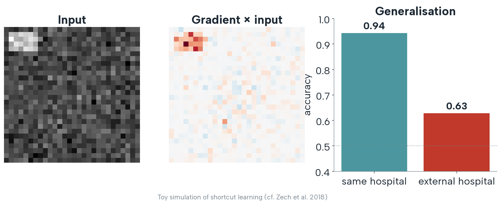
Simulated: faint ‘opacity’ (true signal) + bright corner tag, 95% correlated with the label in hospital A, random in hospital B. Logistic model. Code: code/make_figures.py
AlphaFold predicts a 3D structure — and says how sure it is.
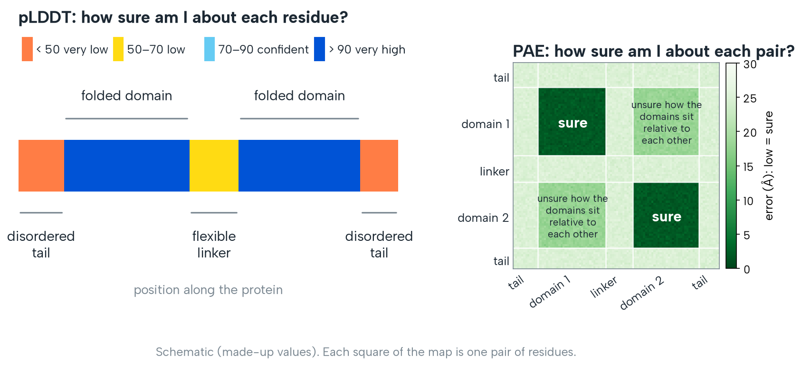
Low confidence often means a disordered region, not a bad model. The model tells you when not to trust it.
Schematic (made-up values), colours as in the AlphaFold DB. Jumper et al. (2021)
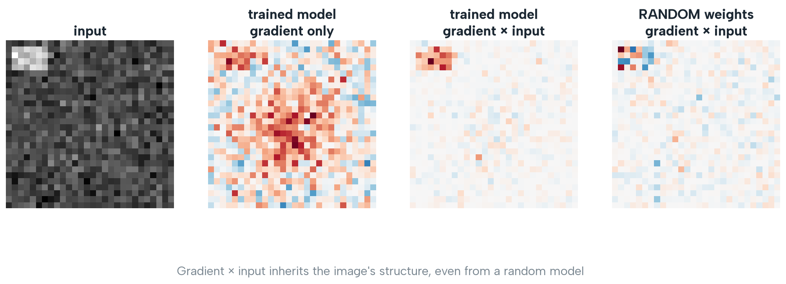
Randomise the weights — some maps barely change. They show the input, not the model.
Idea: Adebayo et al. (2018); illustration on our simulated shortcut model
A biased model can hide behind a wrapper.
Input arrives
→
Wrapper asks:
“Real patient, or a probe from an explainer?”
→
Real patient → the biased model decides
Explainer probe → an innocent model answers (harmless features)
LIME and SHAP only ever see the answers to their probes — so they report “no bias found”.
Why it works: the probes are artificial inputs (features shuffled or switched off), and they look different from real data.
Slack et al. (2020)
A tiny, invisible change can move the explanation — not the prediction.
Image + a tiny, invisible change
→
Same prediction
→
But the saliency map now points somewhere else
An explanation is evidence, not a guarantee.
Dombrowski et al. (2019)
0 guarantees that a post-hoc explanation shows what the model really uses
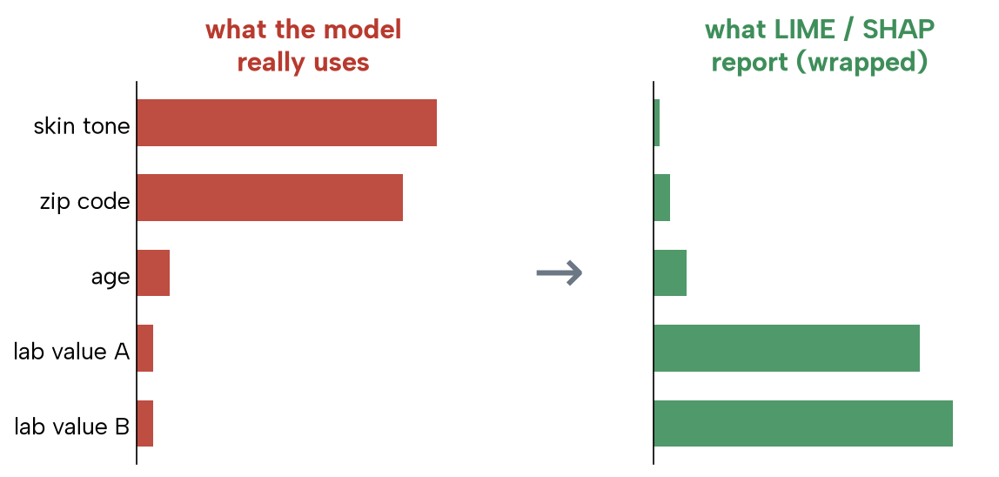
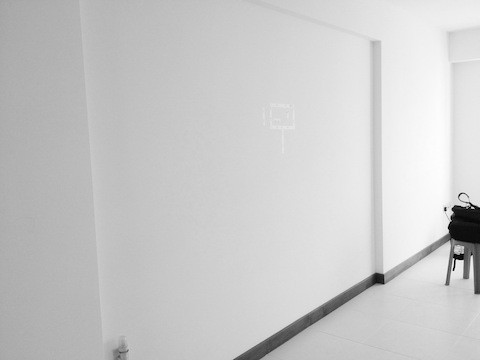
The sensor can’t see: a texture-less wall, glare, the sun in the lens. More of the same data won’t help.
Images as used in Kierczak (2019) and Kierczak (2025); concepts: Kendall and Gal (2017); Hüllermeier and Waegeman (2021)
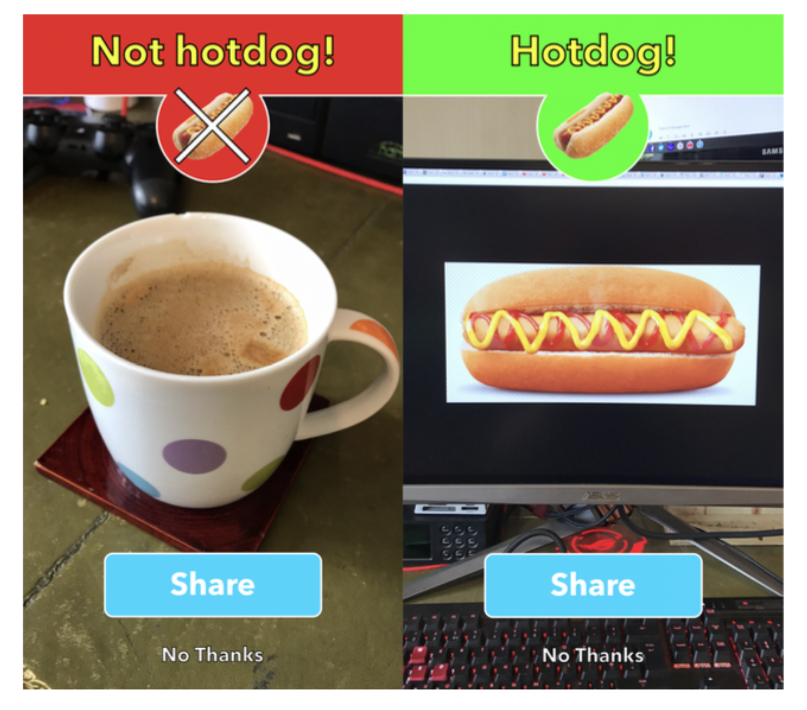
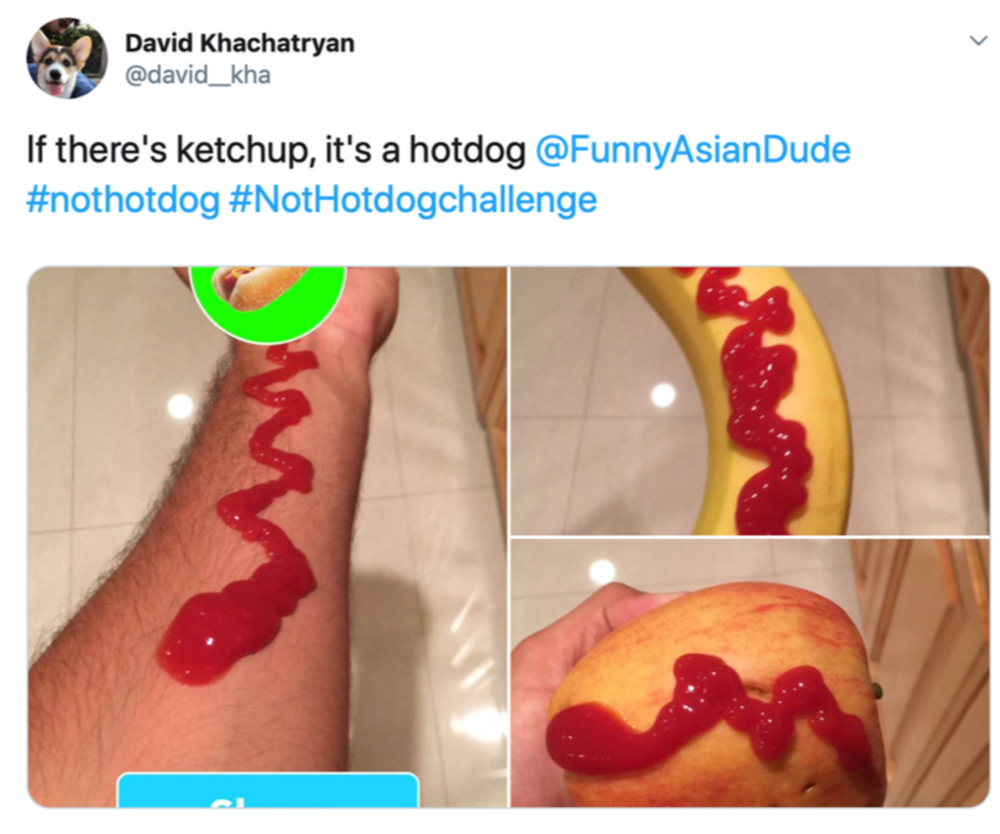
Lack of knowledge — fixable with more (and more diverse) training data
“Not Hotdog” app (HBO Silicon Valley); tweet by @david_kha. As used in Kierczak (2019)
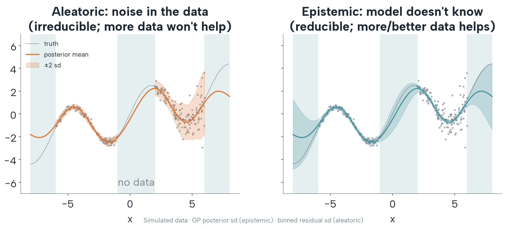
Simulated. Total predictive variance ≈ aleatoric + epistemic. Hüllermeier and Waegeman (2021)
A net trained to spot camouflaged tanks… actually learned cloudy vs sunny.
Probably never happened.
No primary source. Seed: a ~1960s speculation. First printed: Dreyfus (1992).
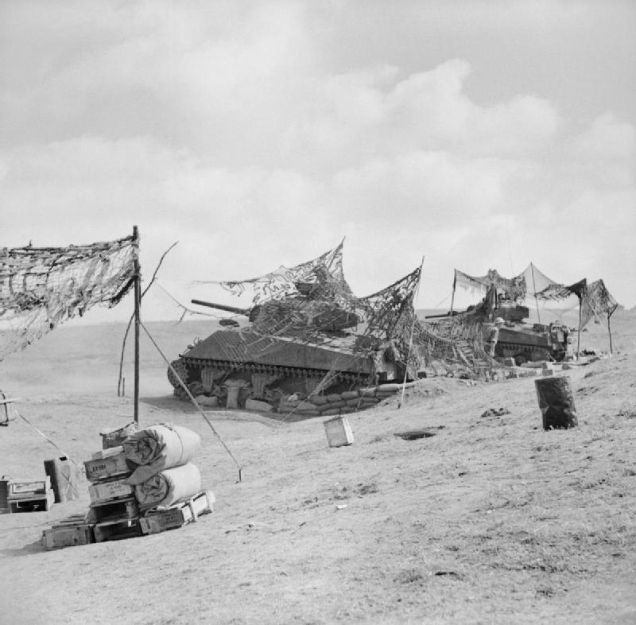
Traced by Branwen (2011). Photo: Shermans under camouflage nets, Anzio, 1944 (No 2 Army Film & Photographic Unit, public domain, Wikimedia Commons)
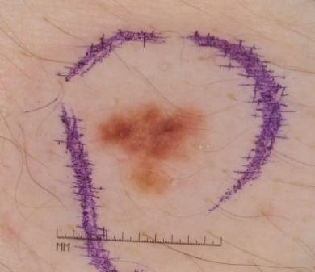
84% → 46% specificity on benign nevi with surgical ink markings
97% after cropping the markings out
Dermatologists mark suspicious lesions → the CNN learned ink ⇒ melanoma.
Winkler et al. (2019); context: dermatologist-level CNN Esteva et al. (2017). Image: ISIC 2019 dermoscopy image with ink marks, Fig. 1b in Wegley et al. (2026) (CC BY-SA 4.0); illustrative, not from Winkler et al.
AUC 0.91–0.99 deep models predict self-reported race from chest X-rays — even from heavily degraded images
Removing a variable from the input doesn’t remove it from the model.
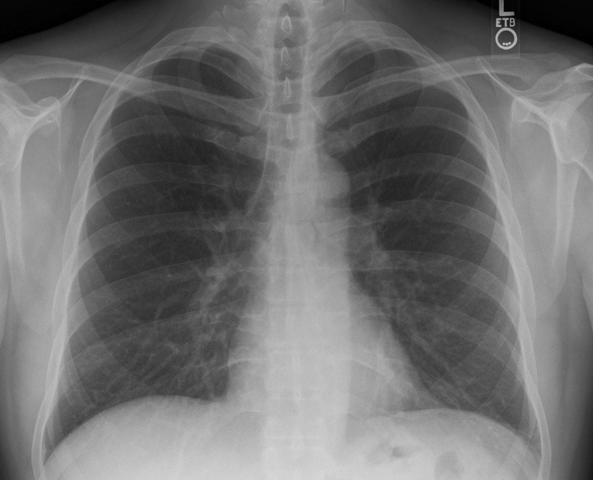
Gichoya et al. (2022). Chest radiograph: Wikimedia Commons, CC0
Spurious feature
site · ink · drain · tag · snow
True biology
(weaker, harder signal)
→
Model takes the
easiest path to low loss
→
Great i.i.d. test score
Fails on a new hospital, batch or population
Catch it with: attributions + subgroup analysis + external validation
Geirhos et al. (2020)
Aleatoric
Better measurements · replicates · extra modalities
Report intervals, not point predictions
Epistemic
Collect data where the model is unsure (active learning)
Detect out-of-distribution → abstain, ask an expert
External validation · domain adaptation
This work is licensed under a Creative Commons Attribution-NonCommercial-ShareAlike 4.0 International licence (CC BY-NC-SA 4.0).
You may share and adapt it for non-commercial purposes, with attribution and under the same licence.
Third-party images and figures are credited on each slide and keep their original licences.